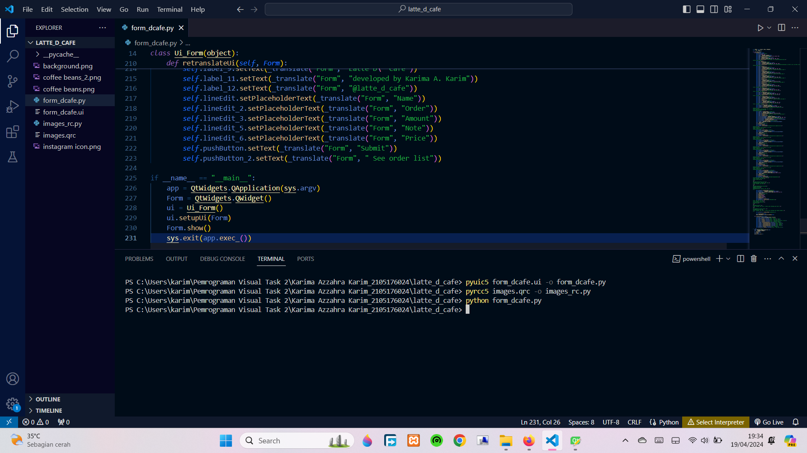

1. Mengerjakan Task py
Tugas kali ini mempraktikkan membuat sebuah desain user interface form input dengan tema pemesanan kopi pada Qt Designer, dan dikonversi dalam bentuk python.
Source Code :
Penjelasan: Menambahkan "import sys, kopi_rc.py" agar gambar yang digunakan untuk membuat form di Qt Designer dapat ditampilkan.
Source Code :
Penjelasan: Ditambahkan beberapa kode di akhir skrip python seperti di gambar pada line 229 hingga line 235, untuk menginisialisasi dan menampilkan user interface yang telah dibuat di Qt Designer. Kemudian file ui dan qrc dikonversi kedalam file py, sebagai berikut: 1. Convert file ui kedalam file python dengan perintah "pyuic5 (nama file ui) -o (nama file python yang akan dibuat)". 2. Convert file qrc kedalam file python dengan perintah "pyrcc5 (nama file qrc) -o (nama file python yang akan dibuat)". 3. Untuk menampilkan output form menggunakan perintah "python (nama file desain py = form_pemesanan_kopi.py)".
Output :

Penjelasan: Output yang dihasilkan berupa form yang telah dibuat sebelumnya.